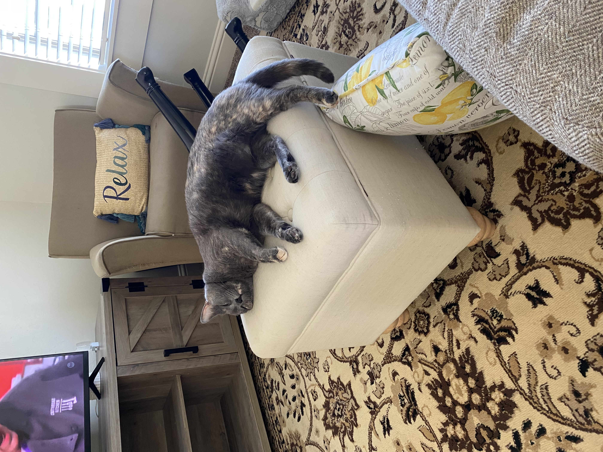

Valentino Eclair Snowflake Croissant Roll DeWidt Rasmussen
Exactly as the title states, Tino is a eunuch. He came originally to the DeWidt family (Courtney's maiden family) Valentine's Day 2017, hence the name "Valentino". When he was picked up from the rescue, he waas presumed to be a girl and started with the name Valentina. Although his first name was switched when the gender was realized, he retained his feminine middle names. What happened was, when he was in the rescue, he went to get fixed and the veterinarian was new and lopped off everything because the rescue owner said that Tino was a girl. How did that vet pass medical school, we don't know. Now Tino is living his best life as a eunuch, but what he doesn't know (or understand, because, well, he's a cat) can't hurt him.
Tino is absolute best friends with Courtney. They adore each other and support each other emotionally. He is a tortoiseshell with a little white spot on the paw Courtney deems as her "favorite" paw. His favorite paw, on the other hand (paw?) is his back right. He loves to chew on it and kick himself in the face with it. He especially loves cat treats and sleeping under the blankets next to Courtney's back.